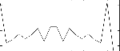

Fills a table with the Farey Sequence Fn of the integer n.
Plugin gen in fareygen.
A Farey Sequence Fn of order n is a list of fractions in their lowest terms between 0 and 1 and in ascending order. Their denominators do not exceed n.
This means a fraction a/b belongs to Fn if 0 ≤ a ≤ b ≤ n.
The numerator and denominator of each fraction are always coprime.
0 and 1 are included in Fn as the fractions 0/1 and 1/1.
For example F5 = {0/1, 1/5, 1/4, 1/3, 2/5, 1/2, 3/5, 2/3, 3/4, 4/5, 1/1}
Some properties of the Farey Sequence:
If a/b and c/d are two successive terms of Fn, then bc - ad = 1.
If a/b, c/d, e/f are three successive terms of Fn, then: c/d = (a+e) / (b+f). In this case c/d is called the mediant fraction between a/b and e/f.
If n > 1, then no two successive terms ofFn have the same denominator.
The length of any Farey Sequence Fn is determined by
|Fn| = 1 + SUM over n (phi(m))
where phi(m) is Euler's totient function, which gives the number of integers ≤ m that are coprime to m.
Some values for the length of Fn given n:
n
F
1
2
2
3
3
5
4
7
5
11
6
13
7
19
8
23
9
29
10
33
11
43
12
47
13
59
14
65
15
73
16
81
17
97
18
103
19
121
20
129
Syntax
f#timesize"farey"fareynummode
Initialization
size -- number of points in the table. Must
be a power of 2 or power-of-2 plus 1 (see f statement).
fareynum -- the integer n for generating Farey Sequence Fn
mode -- integer to trigger a specific
output to be written into the table:
outputs floating point numbers representing the elements of Fn.
outputs delta values of successive elements of Fn, useful for generating note durations for example.
outputs only the denominators of the integer ratios, useful for indexing other tables or instruments for example.
same as mode 2 but with normalised output.
same as mode 0 but with 1 added to each number, useful for generating tables for tuning opcodes, for example cps2pch.
Examples
f10-23"farey"80
Generates generates Farey Sequence F8. The table contains all
23 elements of F8 as floating point numbers.
f10-18"farey"71
This generates Farey Sequence F7. The table contains 18 delta values of F7,
i.e. the difference between ri+1 - ri, where r is the ith element of Fn.
f10-43"farey"112
This generates Farey Sequence F11. The table contains the denominators of all
43 fractions in F11.
f10-43"farey"113
This generates Farey Sequence F11. The table contains the denominators of all
43 fractions in F11, each of those divided by 11, i.e. normalised.
f10-18"farey"74
This generates Farey Sequence F7. The table contains all fractions of F7,
same as mode 0, but this time '1' is added to each table element.
<CsoundSynthesizer><CsOptions></CsOptions><CsInstruments>sr=44100ksmps=10nchnls=1instr4kndxinit0; read out elements of F_8 one by one and print to fileif(kndx<23)thenkelemtabkndx,1fprintks"farey8table.txt","%2.6f\\n",kelemkndx=kndx+1endifendin</CsInstruments><CsScore>; initialise integer for Farey Sequence F_8f10-23"farey"80; if mode=0 then the table stores all elements of the Farey Sequence; as fractions in the range [0,1]i401e</CsScore></CsoundSynthesizer>
Here is a complete example of the GENfarey routine. It uses the files genfarey-2.csd.
<CsoundSynthesizer><CsOptions>; Select audio/midi flags here according to platform-odac;;;realtime audio out;-iadc ;;;uncomment -iadc for RT audio input as well ; For Non-realtime ouput leave only the line below:; -o genfarey.wav -W ;;; for file output any platform</CsOptions><CsInstruments>sr=44100ksmps=32nchnls=20dbfs=1; GENfarey creates table gidelta. ; The table contains the delta values of Farey Sequence 7 (p5=7).; They are used as Inter Onset Intervals (IOIs) or event durations.; If p6 is set to 1 for IOI output then the length of the table (p3=-18) is -(|F_7| - 1); Remember that a negative sign is for non-power-of-2 table lengths.; The negative sign in front of the GEN number prevents post-normalisation of its values.gideltaftgen0,0,-18,"farey",7,1; Use GENfarey with p6 set to 2 to generate the denominators of fractions of F_7 ; this is used in this example as factors to create a series of pitches:gimultftgen0,0,-18,"farey",7,2;-------- loop and trigger instrument 901 using a Farey Sequence polyrhythminstr1kindxinit0kindx2init0ktriggerinit0ktime_unitinitp6kstartinitp4kloopinitp5kinitndxinit0kfn_timesinitgideltaknoteinit60kbasenoteinitp8ifundaminitp7ktriggerseqtimektime_unit,kstart,kloop,kinitndx,kfn_timesif(ktrigger>0)thenkpitch=cpspch(ifundam)kmulttabkindx2,gimultkpitch=kpitch*kmultknote=kbasenote+kmultevent"i",901,0,.4,.10,kpitch,kpitch*.9,0.4,5,.75,.8,1.0,.15,.0,.125,.125,.25,.5,1.0,.0,.0,.0,.0,.125,.25,.25,.25,knotekindx=kindx+1kindx=kindx%kloopkindx2=kindx2+1kindx2=kindx2%kloopendifendin;------ basic 2 Operators FM algorithm ----------------instr901inotedur=p3imaxamp=p4;ampdb(p4)icarrfreq=p5imodfreq=p6ilowndx=p7indxdiff=p8-p7knote=p27aampenvlinsegp9,p14*p3,p10,p15*p3,p11,p16*p3,p12,p17*p3,p13adevenvlinsegp18,p23*p3,p19,p24*p3,p20,p25*p3,p21,p26*p3,p22amodoscoscili(ilowndx+indxdiff*adevenv)*imodfreq,imodfreq,10acaroscosciliimaxamp*aampenv,icarrfreq+amodosc,10outsacarosc,acaroscendin</CsInstruments><CsScore>f1004096101;sine wave ; p4 kstart := index offset into the Farey Sequence; p5 kloop := end index into Farey Seq.; p6 timefac := time in seconds for one loop to complete; p7 fundam := fundamental of the FM instrument; p8 basenote:= root pitch of the midi voice output; note that pitch structures of the midi file output are not equivalent to the; ones used for the FM real-time synthesis.; start dur kstart kloop timefac fundam. basenotei10.04401826.0560i143001837.0572i1341291837.0572i110120181.5884i12212091.5884i115160181548i122205171.7436i146203112.57.0471i151205132.57.0672i173.51.511181.55.0548i1751121816.0358e</CsScore></CsoundSynthesizer>
These are the diagrams of the waveforms of the GENfarey routines, as used in the example:

gidelta ftgen 100,0,-18,"farey",7,1 - delta values of Farey Sequence 7gimult ftgen 101,0,-18,"farey",7,2 - generate the denominators of fractions of F_7